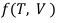

Functions package
Module contents
Distance Module
R-K Distance is a composite distance function that measures the distance and similarity between any two R-K Diagrams in a metric built to measure homeomorphism using a combination of Topological Distance as an extension of Jaccard Distance & Value/Magnitudinal Distance based on an extension of Mahalanobis Distance. R-K Distance is critical to the tuning and understanding of R-K Diagrams for its ability to quantitatively measure divergence (and its dual, i.e. similarity) across all R-K Diagrams rendered from a particular R-K Model.
In our implementation, we used a weighted distance function  by applying composite
distance function based on geometric and value distance, where the geometric distance was implemented over an extension of Jaccard distance based upon nodes and edges, and the value distance was computed using covariance measures inspired by the Mahalanobis distance
Formulation, such that our final R-K Distance equation can be represented as:
by applying composite
distance function based on geometric and value distance, where the geometric distance was implemented over an extension of Jaccard distance based upon nodes and edges, and the value distance was computed using covariance measures inspired by the Mahalanobis distance
Formulation, such that our final R-K Distance equation can be represented as:

where  is a composite function based on topological distance T and value/magnitudinal distance V weighted by vector w.
This also allows for the quantitative comparison of overall homeomorphic similarities between R-K Diagrams defining similarity as a dual of R-K Distance as:
With all results normalized between 0 and 1. Such measures of homeomorphic similarities between R-K Diagrams can be optimized in our metric-space via combinatorial machine learning techniques such as Nevergrad which maximize or minimize the R-K Distance for the purpose of ML Classifications.
A. Topological Distance Function
The Topological Distance Function allows us to compare topological similarities and differences between various clusters and simplexes of any two R-K Diagrams. It allows for the quantitative comparison of large-scale geometric and topological differences between R-K Diagrams. In our initial implementation, we have extended the Jaccard distance formulation to provide a comparison of geometric distance across R-K Diagrams. The Jaccard distance is one of many possible distance functions that can be applied toward graph distances. It is simple but effective in many machine learning algorithms and is a widely applied algorithm across many domains.
Where in the extension of our formulation A and B are defined as a tuple that represents an edge such that  is the source node and is the sink.
is the source node and is the sink.
For the quantitative comparison of R-K Diagrams, it is critical to evaluate the Jaccard distances against the directed edges, such that the distance measure is sensitive to topological differences due to direction. If a Jaccard distance is applied only at the vertex level, key information about the directed edges and the linked vertices would be lost. This would be ineffective for the quantitative comparison of geometric and topological properties across R-K Diagrams. Hence we have modified the original formulation and used edges for Jaccard measurements, such that critical features in the distance measurement are preserved.
B. The Value/Magnitudinal Distance
The Value/Magnitudinal Distance is intended to amplify the effects of the distance measure when topology isn’t sufficient to demonstrate differences. For example, in the case of store sales, a purchase could be very similar topologically, but very different in terms of magnitude as the actual sales value differs radically across R-K Diagrams. By comparing the magnitude of the nodes as well as the topology, it provides a clear distinction across R-K Diagrams when topological differences are not sufficient. We extended the Mahalanobis distance to provide this value/magnitudinal distance measure, which can be computed across the entire dataset and then normalize the values to between 0 and 1 such that we are bound between [0, 1] pre-weighting.

C. Composite Distance Function
These two distance functions are then combined in a unique way to give us the final measure of R-K distance and detailed below:

R-K Distance thereby produces a composite distance function combing both components of Topological and Value/Magnitudinal Distance in a unique way to allow for the homeomorphic comparison of both graph and topological properties of R-K Diagrams as demonstrated in the diagram below:

D. Objective Function: The R-K distance has an ML based Objective Function which is defined as follows:

The goal of the objective function, as defined above, is to maximize divergence across R-K Diagrams by minimizing the similarity across diagrams. This is determined through a distance function defined in the Measuring R-K Distance subsection, which takes into account topological and value / magnitudinal similarities across R-K Diagrams using a weighted distance function. We chose an even distribution of [0.5, 0.5] for w as a prior, as there is no reason to bias the weights apriori. Over iteration of θ, we will attempt to minimize the overall loss. Assuming an infinite number of iterations, we would hope that we maximize divergence across R-K Diagrams such that no R-K Diagram is exactly the same except for the same data, which would deterministically produce the same R-K Diagram.
E. Non-Gradient Combinatorial ML Optimiser
Because topological distance functions do not exhibit continuous gradients we employed a gradient free optimization Based on Nevergrad / NGOpts. NGOpts is an optimizer built by Facebook and the default suggested optimizer for non-gradient combinatorial machine learning involving graphs with discrete nodes and edges.
TODO: Add code from store sales notebook
Filters Module
Built-in filters that comply with the Filter interface.
- class rktoolkit.functions.filters.FilterAll
Filter for all knobs. To be used when all needs to be filtered.
- filter(node)
- get_knobs()
- set_knob(knb, v)
- class rktoolkit.functions.filters.FilterNone
Filter for No filters. To be used when nothing needs to be filtered.
- filter(node)
- get_knobs()
- set_knob(knb, v)
- class rktoolkit.functions.filters.RangeFilter(min: float = 0, max: float = 1)
|A range filter is one of the simplest filters that is provided in version 1 of the R-K Toolkit. We assign the filters to each level of the hierarchy that contains numeric data which operates as follows: | | True : if v /∈ {m,M] | False: else | |where: | • v is the value of the node. | • m is the minimum boundary condition for the filter. | • M is the maximum boundary condition for the filter.
- filter(node)
Filter method to filter the node according to the range.
- Parameters
node (Any) – Node to be filtered
- Returns
Returns true if filtered else false.
- Return type
bool
- get_knobs()
Get knobs to be used for the filter range.
- Returns
Min and max ranges.
- Return type
dict
- set_knob(knb, v)
Set Knobs to given values.
- Parameters
knb (str) – The knob to be adjusted, can be either min or max.
v (int) – Value of the knob to be adjusted to.
- Raises
ValueError – Need the knob argument to be only min or max,else the error will be raised.
Base Ontology and Hierarchical Transform Graphs
Classes used to create Hierarchical Transform Graphs(HTG) or transform normal graphs into a HTG.
- class rktoolkit.functions.htg_transformers.BaseOntologyTransform(mapping, lens='root', color_decay_rate=0.1)
This Class is used for cases in which an ontology is generated or provided for a particular application. It creates a transform for a given Ontology loaded from a JSON file with input given as a Python object. The JSON file contains hierarchical data. This class transforms the ontology into a Graph using the data from the dataframe of any particular data source or from results of the Hierarchical Transform Graph based on covariance parameters. An empty graph is first created and the rest of vertices and edges are added using a private convert method.
- transform(X)
Transforms the ontology into a Graph using the data from the dataframe of GWTC. An empty graph is created and the rest of vertices and edges are added using a private convert method.
- Parameters
X (Any) – Data to be transformed to graph
- Returns
Graph transform for the given data.
- Return type
- class rktoolkit.functions.htg_transformers.CorrelationHTGGenerator(threshold=0.7)
This Class is used to create a Correlation and covariance based Hierarchical Transform Graph(HTG) using a given data frame for pre determining dependence and interrelationships between various column variables residing in the master-dataset which could consist of columns and dimensions from different data sources/streams representing the same event or entity. Transforms a given graph into a Correlated HTG with built-in covariance parameters which determine interdependence between dependent and independent variables. In this case an empty HTG is created first and then nodes are added to it based on the correlation factor between different dimensions of the master-dataset.
- fit(X, y)
- transform(X)
Transforms a given graph into a Correlated HTG. Empty HTG is created and then nodes are added to it based on the correlation factor.
- Parameters
X (Any) – Input data to be used for creating the transform. Will be converted into a correlated dataframe.
- Returns
A correlated Hierarchical Transform Graph.
- Return type
Graph Linkers
Simple linker methods to link nodes to a graph.
- class rktoolkit.functions.linkers.SimpleChildLinker(theta=1)
A simple leaf-linker function is provided in the R-K Toolkit which can be used to build a specific R-K model based on the choice of lens and application. The simple leaf linker compares only the leafs of a graph tree, and provides an edge E in the case the euclidean distance is less than the specified threshold. Thus a Leaf Linker function compares the distances between values with ϵ < θ, and links the leafs of the final clusters based upon the set threshold.
- check_valid_node(node) bool
Checks if node contains value or not
- Parameters
node (Any) – Node to be checked for validity
- Returns
Returns true if Node is valid, else false
- Return type
bool
- get_knobs()
Get the knobs to link.
- Returns
Knob
- Return type
dict
- link(G)
Links the nodes of the given Graph by creating a copy of the graph and adding nodes to it based on criteria
- set_knob(knb, v)
_summary_
- Parameters
knb (str) – Knob value
v (int) – Value for theta
- Raises
ValueError – If knob isn’t theta raises Valu error
- class rktoolkit.functions.linkers.SimpleLinkageFunction(threshold=-1, *args, **kwargs)
A greedy and quick linkage function implementing LinkageFunction. Takes O(n^2) time and can be improved.
- link(X: HierarchicalGraph)
Simple recursive link method to add nodes to Graph.
- Parameters
X (HierarchicalGraph) – Graph to be linked, needs to be Hierarchical to implement the linking without issues.
- Returns
Returns a linked Hierarchical Graph after recursion is finished
- Return type
Localization methods
Matrix localization methods. Must implement the LocalizationFunction interface.
- class rktoolkit.functions.localizers.IterableLocalizationFunction(iterateX=True, iterateY=True, iterateZ=True)
An Iterable localization function that localizes a N x D matrix around the max. The class can be initialized with parameters to determine which dimensions should be iterated and modified for a particular application.
- localize(X)
Localizes the matrix X around the max iteratively.
- Parameters
X (ndarray) – Matrix X to be localized.
- Returns
Localized X,Y and Z values
- Return type
int,int,int
- class rktoolkit.functions.localizers.NDMaxLocalizationFunction
Localization function that localizes a N x D matrix around the maximum value of the matrix.
- predict(X)
Predicts and localizes a given N x D matrix around the maximum of the matrix.
- Parameters
X (ndarray) – Matrix to be localized. Should be in N x D dimensions.
- Returns
Localized values for the matrix X
- Return type
tuple[int], int